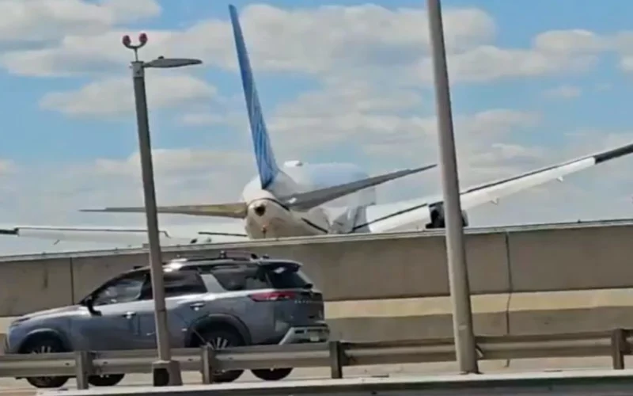

Breaking News
 May 4
May 4
byNoah Grayson
A United Airlines Boeing 767 struck a truck and light pole while approaching Newark Airport. Authorities investigate how the plane flew dangerously low.
An investigation is ongoing after a United Airlines plane collided with a light pole and a truck on the New Jersey Turnpike while approaching Newark Liberty International Airport on Sunday afternoon, according to officials. Flight UA169, a Boeing 767 arriving from Venice, Italy, carried 221 passengers and 10 crew members. Dash cam footage from the truck captures the moment it is impacted, with a frame-by-frame assessment revealing the plane's wheel outside the driver's window. A preliminary examination by New Jersey State Police revealed that a tire from the plane's landing gear and the underside of the aircraft collided with both a light post and a tractor-trailer. The pole also struck a Jeep on the turnpike. The jet flew low over the roadway before landing shortly after 2 p.m., according to cellphone video. The Port Authority confirmed that the aircraft was nearing Runway 29 when the crash happened.
This is one of those rare, close-call moments that really grabs attention. A large passenger jet from United Airlines coming that close to a busy highway — and actually hitting vehicles — raises serious questions about how the approach went wrong. The fact that no one on board was hurt is remarkable, but it highlights how quickly things can go sideways, even in highly controlled situations like landing.
The tractor-trailer, which was heading to a Newark depot, was hit when one of the plane’s landing gear tires went through the truck’s window and windshield. The driver, Warren Boardley, sustained injuries from broken glass and was taken to the hospital, where he was treated and later released. Despite the incident, the aircraft landed safely, taxied to the gate normally, and none of the passengers or crew members were injured. United Airlines stated that its maintenance team is evaluating damage to the aircraft and that a full investigation will be conducted. The Port Authority said that the light pole and the truck were damaged, but that airport operations were not significantly affected. Airport workers looked for debris on the runway and quickly got back to business as usual.
The Federal Aviation Administration and the National Transportation Safety Board have both launched investigations into the incident. The NTSB will analyze cockpit voice recordings and flight data as part of its review. Investigators are focusing on how the aircraft came to be so low during its approach. Questions include whether wind conditions played a role, whether there was a loss of situational awareness in the cockpit, and what factors allowed the aircraft to descend to that level without correction. The crew has been removed from service as part of the airline’s internal safety investigation. A preliminary report is expected within 30 days.
Flight UA169 usually doesn't land like this. The wind forced the plane to use Runway 29, which is the shortest runway at Newark Liberty International Airport. Runway 29 is shorter than the other runways at the airport. It is about 6,725 feet long. A Boeing 767 can still fly safely, but there is less room for mistakes because it is shorter. Landing is also harder because there is less space between the runway and the nearby freeway. Pilots have to circle around to line up with the runway because it doesn't have some of the more advanced landing technologies that other runways do. Experts thought the approach was bad because pilots might have tried to land too far down the runway, which could have caused the low altitude.
A lot of people who were there and who were traveling paid attention to the event. Some people said the video was shocking, while others were glad that no one died. People driving on the turnpike said they saw the plane flying too low. One person said they heard a loud engine noise, then saw debris and smoke. Passengers and bystanders said that these kinds of things don't happen very often, and some stressed that flying is still statistically safe, even though it was scary. Officials and experts also said how amazing it was that things didn't get worse, given how big the crash was and how many people were involved.
The investigation by the National Transportation Safety Board will be key. Expect a focus on why the plane was flying so low — whether it was weather, pilot decisions, or something else. Early findings could come soon, and they’ll likely shape any safety changes going forward.

Noah Grayson is a U.S. daily news reporter covering national stories, breaking events, and human-interest developments.